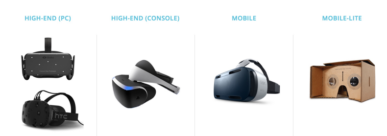
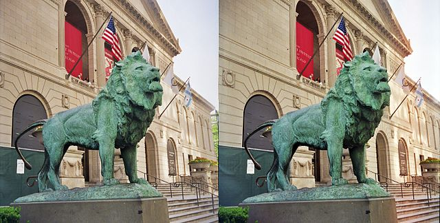
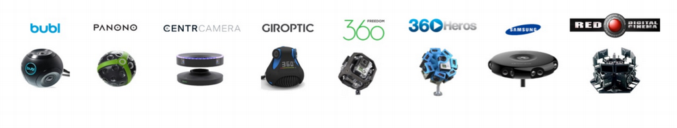
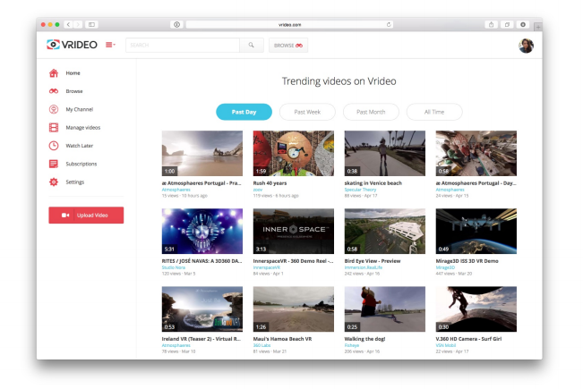

Virtual Reality Video
Created by Sean Lawrence / @lawrensm
Lead web developer at Vrideo
Outline
terms and definitions
how it works
Vrideo
VR on the web
Big picture
We desire to create, share, and consume experiences.
Virtual reality video is one way to encode and distribute experiences.
Commonly referred to as...
360 video
VR video
panoramic video
immersive video
See also: Vrideo blog post - What's in a name?
Best viewed using a head mounted display
Panoramic capture was largely a niche interest before the advent of these devices...
Can be monoscopic or stereoscopic
What does that mean?
Monoscopic is a video or image obtained from a single view point.
Stereoscopic is a video or image obtained from two slightly offset viewpoints, so when viewed together create the illusion of depth and solidarity.
How is video captured?
Commonly achieved using a combination of smaller cameras with wide fields of view aimed at specific angles.
Smaller and easier to use solutions are coming to market.
Cameras and Mounts
Stitching Software
Stitching is the process of combining multiple photographic images with overlapping fields of view to produce a panorama.
For spherical content, footage is combined to produce what's called a Equirectangular projection.

Source: 360 Heros
Source: 360 Heros
Ideally paired with directional audio
Many solutions but no standard
Vrideo
http://www.vrideo.com
VR on the web
fast
cheap
democratized
Early days
vr.js - https://github.com/benvanik/vr.js/
NPAPI - cross-platform plugin architecture
WebGL - JS API for rendering 3D and 2D graphics
Distortion handled by you!
WebVR!
Experimental Javascript API that provides access to Virtual Reality devices, such as the Oculus Rift or Google Cardboard, in your browser.
Available in Firefox nightly builds with an Oculus Rift enabler installed, or in experimental builds of Chrome.
WebVR
Distortion handled by the browser
Provides a standardized API, abstracts away the details
WebVR Limitations
Capped at 60 FPS
Questions?
Sean Lawrence @lawrensm